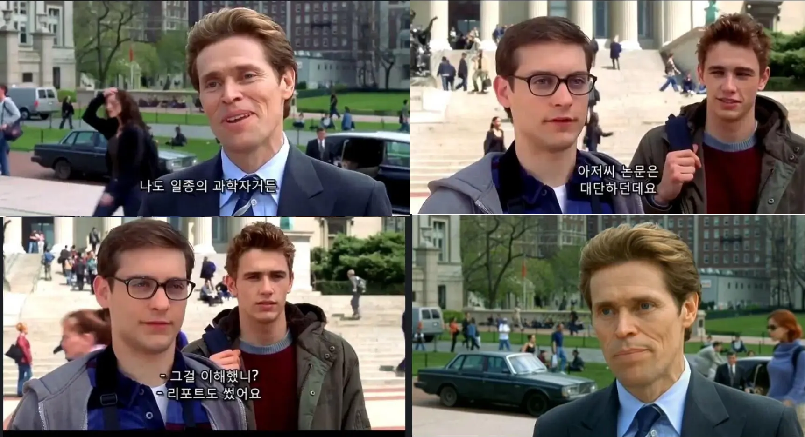

실험실에서의 의문을 나만의 연구 질문으로 확장하기
| 구분 | 🧪 실험 위주 | 📚 문헌 연구 |
|---|---|---|
| 수준 | 고교 실험실 환경 및 기자재의 한계 명확 | 노력에 따라 수준의 제한이 없음 |
| 주도성 | 지도교사의 개입과 도움이 많이 필요함 | 자주적이고 독자적인 탐구 가능 |
| 설명력 | 매뉴얼 중심이라 깊은 답변에 한계가 있음 | 면접 등에서 스스로 설명하기 용이함 |
※ 양질의 실험탐구 1회, 문헌탐구 여러 번이 가장 이상적.

적절한 탐구 주제는 '왜', '어떻게', '어떤 영향이 있는가'와 같은 구조로 이루어져야 합니다.
• 이미 밝혀진 정의나 특징을 그대로 정리하는 형태
• 예시: 전자현미경의 구조는 무엇인가?
• 원인과 메커니즘, 변인 간의 관계를 분석하는 형태
• 예시: 왜 광학현미경은 전자현미경 수준의 분해능이 나오지 않는가?
| 기반 실험 | 탐구 질문 예시 | 핵심 과학 개념 |
|---|---|---|
| 현미경 및 세포 관찰 | 왜 광학현미경은 배율을 높여도 미세 소기관까지 선명하게 보지 못할까? | 가시광선, 분해능, 회절 현상 |
| 원형질 분리 & 삼투 | 동물세포 삼투 시, 외부 농도 변화는 용혈 현상에 어떤 영향을 미치는가? | 팽압, 용혈 현상, 삼투압 변인 |
| 효소의 촉매작용 | 카탈레이스 효소는 환경(pH/중금속)에 의해 어떻게 활성을 잃는가? | 단백질 입체 구조, 최적 pH |
| 효모의 발효 | 효모는 당의 분자 구조에 따라 어떻게 선택적으로 수송하며 속도 차이를 주는가? | 탄수화물 구조, 기질 특이성 |
전문가들이 검증한 연구 자료입니다. '초록'과 '결론'을 먼저 읽어보세요.
✔ 활용: DBpia, RISS, 구글 학술검색
내 탐구가 현재 사회에서 왜 중요한지(동기) 설명할 때 유용합니다.
✔ 활용: 빅카인즈, 언론사 기획 보도
객관적인 수치를 보여주는 증거입니다.
✔ 출처: 공공데이터포털, 질병관리청
우리 학교 학생들을 대상으로 실태를 조사할 때 씁니다.
✔ 도구: 구글 폼(Google Forms)
보고서 형태로 되어 가독성이 좋습니다.
✔ 출처: 한국생명공학연구원
1. 나의 진로 / 2. 기반 실험 / 3. 탐구 질문
4. 선정한 이유 / 5. 관련 교과 개념
6. 활용할 자료 조사 방법 (예: DBpia 논문 검색 및 통계 활용)